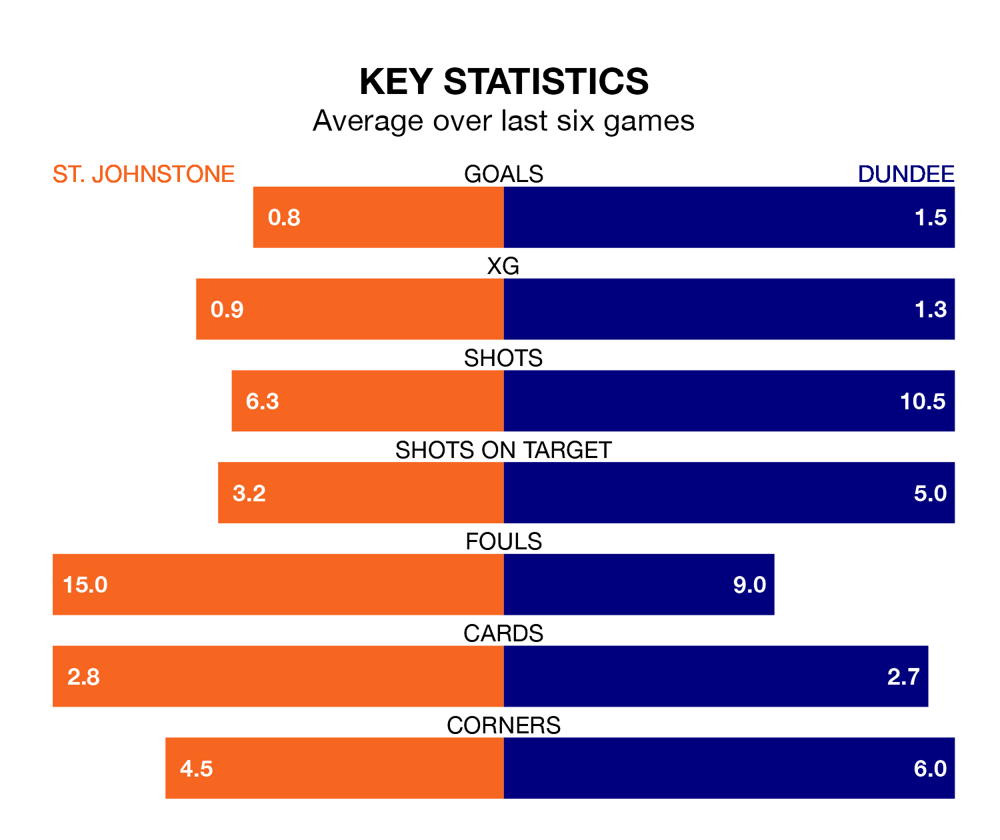

St. Johnstone are on a poor run ahead of hosting Dundee at McDiarmid Park on Saturday, with just four points collected from their last six games.
The Saints have picked up one win and one draw in their last six Premiership games, and face a Dees side whose last six games have brought three wins and one draw.
In the last 10 years, St. Johnstone and Dundee have played each other on 26 occasions. St. Johnstone won 12 of them, Dundee nine, and they drew five times.
On average, the Saints scored 1.3 goals and the Dees 1.0 in those matches.
Their last meeting was on February 11, when Dundee won 2-1 at home.
With 21 goals in 30 games so far this season, St. Johnstone are the league's second-lowest scorers with 0.7 goals per game. And they are conceding more than average, letting in 41 goals at a rate of 1.4 per game.
Dundee, meanwhile, are above average scorers, with 1.4 goals per game, compared to a league average of 1.3. They have conceded 1.7 goals per game.
The Saints are 10th in the table after 30 games, of which they have won six and drawn 10, earning 28 points.
The Dees are three places ahead of the home side in seventh, with nine wins and nine draws putting them on 36 points.
St. Johnstone's last match was on March 16, a 3-1 loss against Celtic, with Connor Smith getting the goal for the Saints.
Dundee beat Aberdeen 1-0 last time out, on March 13, with Luke McCowan on the scoresheet.
Updated: 12:39 (UTC), 26/03/24